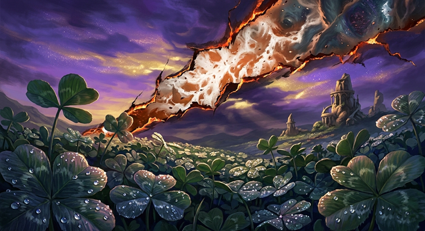
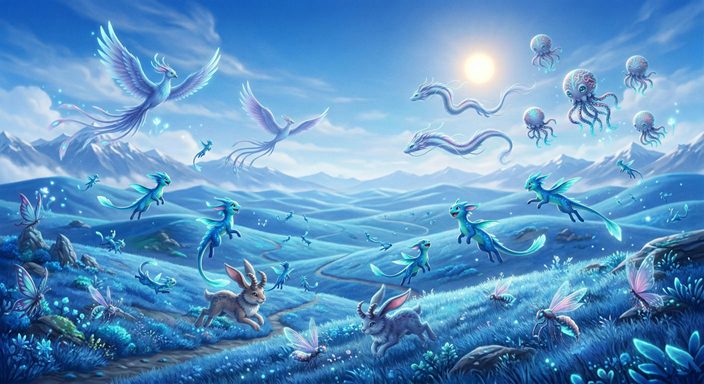
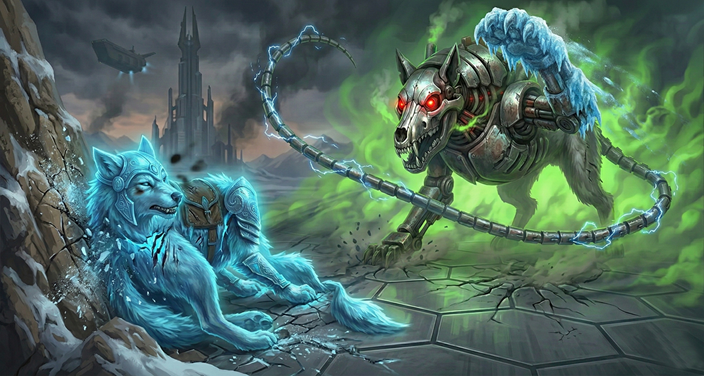
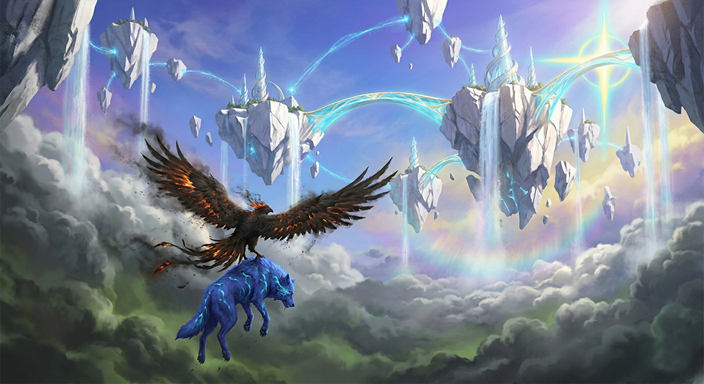
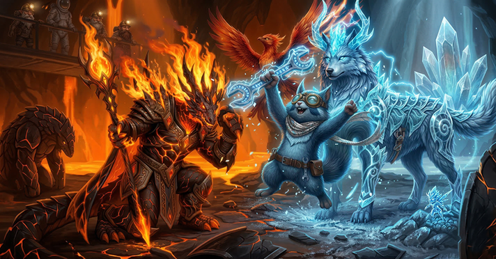
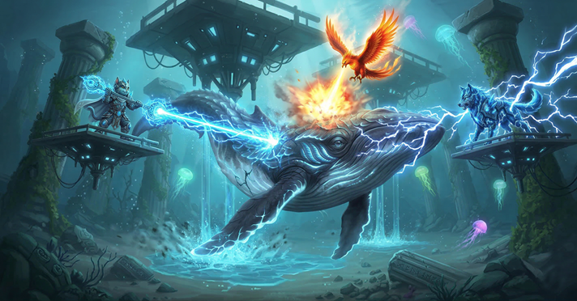
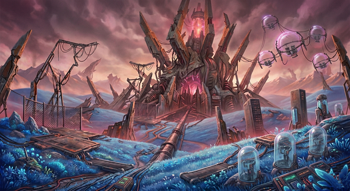
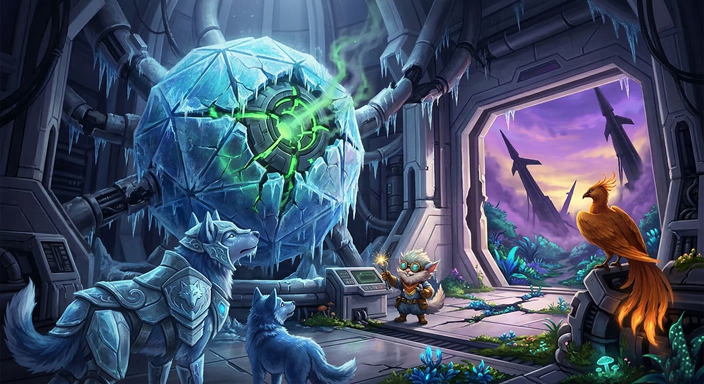

CHAPTERS
THE 23 STEPS TO RECLAMATION
Part I: The Falling Stars
Chapters 1-3
The Descent
The invasion begins as Azure Heights is corrupted. The world watches in horror as young Quetiemals are abducted to serve as biological batteries for the Tech-Biome.

Invasion Site

Target: Harvester
Part II: The Alliance of the Battered
Chapters 4-8
Fanning the Flames
Ice Heart is defeated by the Mirror of Frost but is rescued by Hotly. Together, they ascend to the Sky Sanctuary to convince Queen NyAqueen that the "ceiling" in the sky is a cage.

Recon: Sky Sanctuary

Asset: Hotly
Part III: The United Front
Chapters 9-20
The Long March
A global trek to unite Eyuforyia. From the Molten Core to the Sunken Ruins and the Rotten Marsh, the resistance grows as they salvage technology.

Sector: Molten Core

Sector: Sunken Ruins
Part IV: The Final Reclamation
Chapters 21-23
Zero Hour
The final assault on Tech-Shack City. Using the Veridian Flute, the united front breaches the inner sanctum to dismantle the Central AI.

Target: Core City

Boss: Core Intel